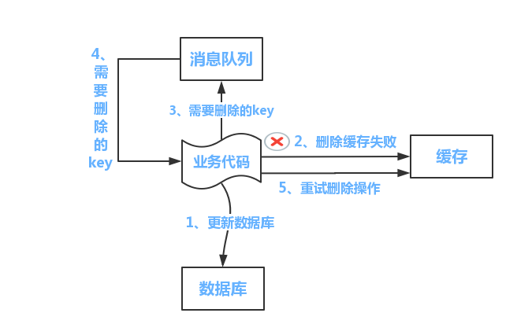
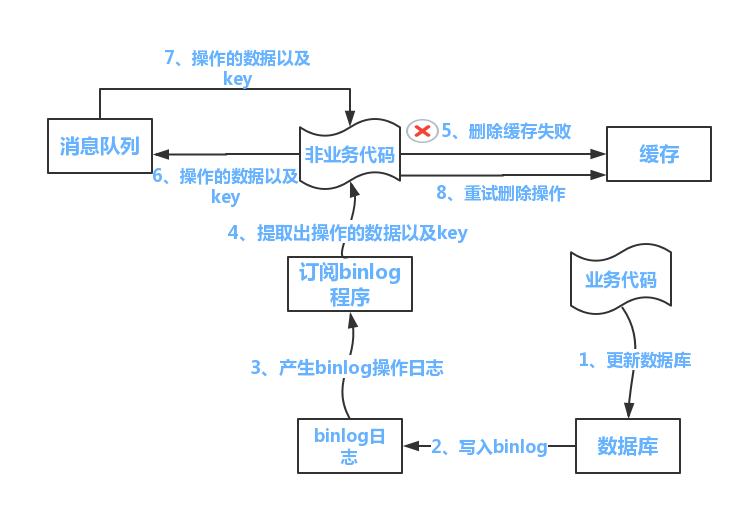

数据库与缓存双写一致性方案解析
先更新数据库，再更新缓存
这套方案，大家是普遍反对的。为什么呢？有如下两点原因。
原因一（线程安全角度）
同时有请求A和请求B进行更新操作，那么会出现
- 线程A更新了数据库；
- 线程B更新了数据库；
- 线程B更新了缓存；
- 线程A更新了缓存；
这就出现请求A更新缓存应该比请求B更新缓存早才对，但是因为网络等原因，B却比A更早更新了缓存。这就导致了脏数据，因此不考虑。
原因二（业务场景角度）
有如下两点：
- 如果是一个写数据库场景比较多，而读数据场景比较少的业务需求，采用这种方案就会导致，数据压根还没读，缓存就被频繁的更新，浪费性能。
- 如果写入数据库的值，并不是直接写入缓存的，而是要经过一系列复杂的计算再写入缓存。那么，每次写入数据库后，都再次计算写入缓存的值，无疑是浪费性能的。显然，删除缓存更为适合。
先删除缓存，再更新数据库
该方案会导致不一致的原因是。同时有一个请求A进行更新操作，另一个请求B进行查询操作。那么会出现如下情形:
- 请求A进行写操作，删除缓存；
- 请求B查询发现缓存不存在；
- 请求B去数据库查询得到旧值；
- 请求B将旧值写入缓存；
- 请求A将新值写入数据库。
上述情况就会导致不一致的情形出现。而且，如果不采用给缓存设置过期时间策略，该数据永远都是脏数据。
那么，如何解决呢？采用延时双删策略。
伪代码如下：
1 | public void write(String key,Object data){ |
转化为中文描述就是：
- 先淘汰缓存；
- 再写数据库（这两步和原来一样）；
- 休眠1秒，再次淘汰缓存。
这么做，可以将1秒内所造成的缓存脏数据，再次删除。
那么，这个1秒怎么确定的，具体该休眠多久呢？
针对上面的情形，读者应该自行评估自己的项目的读数据业务逻辑的耗时。然后写数据的休眠时间则在读数据业务逻辑的耗时基础上，加几百ms即可。这么做的目的，就是确保读请求结束，写请求可以删除读请求造成的缓存脏数据。
如果用了mysql的读写分离架构怎么办？
在这种情况下，造成数据不一致的原因如下，还是两个请求，一个请求A进行更新操作，另一个请求B进行查询操作。
- 请求A进行写操作，删除缓存；
- 请求A将数据写入数据库了；
- 请求B查询缓存发现，缓存没有值；
- 请求B去从库查询，这时，还没有完成主从同步，因此查询到的是旧值；
- 请求B将旧值写入缓存
- 数据库完成主从同步，从库变为新值
上述情形，就是数据不一致的原因。还是使用双删延时策略。只是，睡眠时间修改为在主从同步的延时时间基础上，加几百ms。
采用这种同步淘汰策略，吞吐量降低怎么办？
那就将第二次删除作为异步的。自己起一个线程，异步删除。这样，写的请求就不用沉睡一段时间后了，再返回。这么做，加大吞吐量。
第二次删除,如果删除失败怎么办？
这是个非常好的问题，因为第二次删除失败，就会出现如下情形。还是有两个请求，一个请求A进行更新操作，另一个请求B进行查询操作，为了方便，假设是单库：
- 请求A进行写操作，删除缓存
- 请求B查询发现缓存不存在
- 请求B去数据库查询得到旧值
- 请求B将旧值写入缓存
- 请求A将新值写入数据库
- 请求A试图去删除请求B写入对缓存值，结果失败了。
这也就是说。如果第二次删除缓存失败，会再次出现缓存和数据库不一致的问题。
先更新数据库，再删除缓存
首先，先说一下。老外提出了一个缓存更新套路，名为《Cache-Aside pattern》。其中就指出
- 失效：应用程序先从cache取数据，没有得到，则从数据库中取数据，成功后，放到缓存中。
- 命中：应用程序从cache中取数据，取到后返回。
- 更新：先把数据存到数据库中，成功后，再让缓存失效。
另外，知名社交网站facebook也在论文《Scaling Memcache at Facebook》中提出，他们用的也是先更新数据库，再删缓存的策略。
这种情况不存在并发问题么？
不是的。假设这会有两个请求，一个请求A做查询操作，一个请求B做更新操作，那么会有如下情形产生
- 缓存刚好失效
- 请求A查询数据库，得一个旧值
- 请求B将新值写入数据库
- 请求B删除缓存
- 请求A将查到的旧值写入缓存
ok，如果发生上述情况，确实是会发生脏数据。然而，发生这种情况的概率又有多少呢？
发生上述情况有一个先天性条件，就是步骤（3）的写数据库操作比步骤（2）的读数据库操作耗时更短，才有可能使得步骤（4）先于步骤（5）。可是，大家想想，数据库的读操作的速度远快于写操作的（不然做读写分离干嘛，做读写分离的意义就是因为读操作比较快，耗资源少），因此步骤（3）耗时比步骤（2）更短，这一情形很难出现。假设，有人非要抬杠，有强迫症，一定要解决怎么办？如何解决上述并发问题？首先，给缓存设有效时间是一种方案。其次，采用策略（2）里给出的异步延时删除策略，保证读请求完成以后，再进行删除操作。
删缓存失败了怎么办
提供一个保障的重试机制，这里给出两套方案
方案1

流程如下所示
- 更新数据库数据；
- 缓存因为种种问题删除失败；
- 将需要删除的key发送至消息队列；
- 自己消费消息，获得需要删除的key；
- 继续重试删除操作，直到成功。
然而，该方案有一个缺点，对业务线代码造成大量的侵入。于是有了方案二，在方案二中，启动一个订阅程序去订阅数据库的binlog，获得需要操作的数据。在应用程序中，另起一段程序，获得这个订阅程序传来的信息，进行删除缓存操作。
方案2

流程如下图所示：
- 更新数据库数据；
- 数据库会将操作信息写入binlog日志当中；
- 订阅程序提取出所需要的数据以及key；
- 另起一段非业务代码，获得该信息；
- 尝试删除缓存操作，发现删除失败；
- 将这些信息发送至消息队列；
- 重新从消息队列中获得该数据，重试操作。